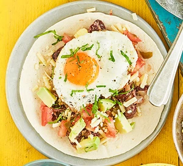

Huevos rancheros
Enjoy this Mexican-inspired vegetarian brunch of egg, tomato, avocado, kidney beans and cheese, on top of tortilla. It's spicy, filling and full of flavour
Ingredients:
- 2 tbsp olive oil
- 1 small onion , diced
- 2 garlic cloves , crushed
- 400g can red kidney beans , drained and rinsed
- 1 tsp ground cumin
- ¼ tsp chilli powder
- ½ tsp dried oregano
- 4 eggs
- 4 small flour tortillas , warmed
- 1 large tomato , diced
- handful pickled jalapeño peppers , roughly chopped
- 30g cheddar , grated
- 1 avocado , peeled, de-stoned and diced
- 1 lime , half juiced, half cut into wedges, to serve
- chopped coriander , to serve
Directions:
- Heat 1 tbsp oil in a large pan. Add the onions with a pinch of salt, and cook until translucent, around 3-4 mins. Add the garlic and cook for a minute more.
- Stir in the beans, cumin, chilli powder, oregano, some seasoning and 100ml water. Cook for 5-7 mins, stirring occasionally, or until the beans have softened, then remove from the heat, mash and set aside.
- Heat the remaining oil in a large frying pan over a medium-high heat. Crack in the eggs, then reduce the heat to low and cook slowly until the whites are completely firm.
- To assemble, spread the beans onto the tortillas, add the tomatoes and jalapeños and sprinkle with cheese. Top with some avocado, a squeeze of lime juice and a fried egg, then scatter with coriander. Serve with the lime wedges on the side.
Mexican tomato rice
Ingredients:
- 1 tbsp sunflower oil
- 1 onion, finely chopped
- 2 garlic cloves, minced
- 250g long grain rice
- 1 tsp chipotle paste, optional (more if you want it spicier)
- 1 tbsp tomato purée
- 1 x 400g tin chopped tomatoes
- 750ml hot chicken or vegetable stock
- small bunch of coriander, finely chopped
Directions:
- Heat the oil in a saucepan and sizzle the onion for 5 mins until just starting to soften. Add the garlic and cook for a minute more, then stir in the chipotle paste (if using) and the tomato purée and cook for a minute.
- Add the tomatoes and simmer for a few minutes, then scatter the rice into the pan and stir, so it’s coated in the tomato mix. Pour over the hot stock, season, give everything another stir and bring to the boil, then cover the pan with a lid and turn the heat down to the lowest possible setting.
- Gently simmer for 15-20 mins until all the stock has been absorbed and the rice is cooked through. Leave the rice to sit for a few mins off the heat, then stir through the coriander and serve.